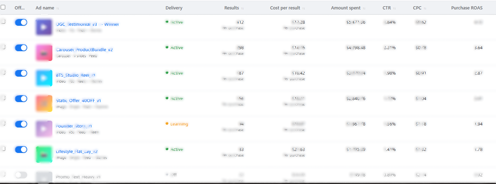

Ask ten Shopify founders how they test Meta Ads creative and nine will describe the same thing: they make a handful of ads that all use the same hook, the same format, and the same angle — just with different footage or slightly different copy — then run them all in the same ad set and call it "testing."
That's not testing. That's variance. And variance doesn't tell you anything useful, because when one ad wins, you can't say why. Was it the hook? The format? The offer in the caption? You don't know, so you can't repeat it.
Real creative testing isolates variables on purpose, so every result teaches you something you can reuse. This is the exact framework we run for every Shopify account we manage — the same one referenced in our guide on fixing rising CPA, broken down in full here.
Why Random Testing Burns Budget Without Building Knowledge
Every Meta Ads dollar you spend on a test should do two things: tell you whether that specific ad works, and teach you something about your audience that improves the next round of creative. Random testing only does the first — and even then, unreliably, because you can't isolate what caused the result.
The fix isn't more ads. It's a matrix that forces every test to isolate one variable at a time.
The 3-Layer Testing Matrix: Hook, Format, Angle
We break every creative test into three layers. Each layer tests one variable while holding the others constant, so results are actually interpretable.
| Layer | What You're Testing | Example Variants |
|---|---|---|
| Hook | The first 3 seconds — what stops the scroll | Problem-agitate, social proof, direct benefit, curiosity, bold claim |
| Format | How the message is delivered | UGC talking-head, static image, carousel, studio B-roll, founder story |
| Angle | The core selling argument | Price/value, quality/craftsmanship, lifestyle/aspiration, before/after |
A full testing cycle doesn't mean testing every combination — that's too many ads for any reasonable budget. It means picking one layer to focus on per cycle. Run a hook test with format and angle held constant. Two weeks later, run a format test with your winning hook and angle held constant. This way each cycle builds directly on what the last one taught you.

How Many Concepts Per Cycle
Test 4-8 genuinely different concepts every two weeks. Fewer than 4 and you don't have enough spread to identify a pattern. More than 8 and you split budget so thin that no single ad gets enough spend to reach a reliable signal. Six is usually the sweet spot for a mid-size Shopify account spending $3K-$15K/month on Meta Ads.
Key Takeaway
Never test more than one layer per cycle. If you change the hook, format, and angle all at once and one ad wins, you've learned nothing you can repeat — you've just gotten lucky once.
Budget and Kill Rules: When to Cut a Loser
The framework only works if you're disciplined about killing losers fast. Every day you leave a losing ad running is budget that could be funding the next test.
- Budget per concept: $50-100 spend before making a kill/keep decision. That's typically enough to see CTR and cost-per-result trending in a clear direction within 48-72 hours.
- Kill trigger #1: No purchase (or no add-to-cart, for lower-funnel products) after $50-100 spend.
- Kill trigger #2: CTR more than 40% below your account average with no upward trend by hour 48.
- Kill trigger #3: Cost-per-result trending more than 50% above your target CPA with three consecutive days of no improvement.
Don't wait a full week "hoping it turns around." If an ad hasn't shown a positive signal by the 72-hour mark, that budget is better spent on the next concept in your testing queue.
The brands with consistently low CPA aren't the ones with the "best" creative — they're the ones who kill losers fastest and reinvest into the next test without hesitation.
The Creative Brief: What to Hand Your Editor or UGC Creator
Vague briefs produce vague creative. "Make a video about the product" gets you a product video that looks like every other product video. A brief that specifies the hook, format, and angle gets you creative that's actually testing something.
Every brief we send includes:
- The hook (first 3 seconds), written out word-for-word or scene-by-scene. Not "start strong" — the actual line or visual.
- The format — UGC selfie-style, studio B-roll, screen-recording, carousel with specific slide count.
- The angle — the one argument this specific ad is making. One angle per ad, not five.
- The CTA — exact wording and placement (verbal, on-screen text, or caption).
- What NOT to include — usually the most-skipped part of a brief, and often the most useful. If a previous winner had a specific pacing or tone, say so explicitly.
Scaling a Winner Without Killing It
Once a concept proves itself, resist the urge to dump budget into it immediately. Creative winners fatigue the same way accounts do when you scale too aggressively — see our breakdown of the 20-30% incremental scaling rule for the exact pacing to use when you push budget behind a winning ad.
Winning creative still needs the right account structure to convert.
See the 7 reasons CPA rises even with good ads →Reading Results the Right Way
When a hook-test cycle finishes, don't just look at which ad had the lowest CPA — look at what the winning hook has in common across the audiences and placements it performed well in. A hook that wins on Reels but flops on Feed is teaching you something about format-hook fit, not just "this hook is good."
Log every test result — hook, format, angle, CTR, CPA, and frequency at kill or scale — in a simple spreadsheet. After 4-5 cycles, patterns emerge: certain hooks consistently outperform in your account regardless of format, or a specific angle only works paired with UGC. That pattern library is worth more than any single winning ad, because it compounds.
Frequently Asked Questions
How many Meta Ads creative concepts should I test at once?
Test 4-8 genuinely different concepts every two weeks — not 4-8 variations of the same idea. Different hooks, different formats (UGC, static, carousel), and different angles (price, quality, lifestyle). Fewer than 4 and you can't isolate what's working; more than 8 and you split budget too thin to reach significance.
How much budget do I need to test one creative concept?
Budget $50-100 per concept before making a kill/keep decision. That's usually enough spend to see whether CTR and CPA are trending toward viable numbers within 48-72 hours, without burning your whole budget on a loser.
When should I kill a losing Meta Ads creative?
Kill it at the 72-hour mark if it hasn't spent through $50-100 without a purchase, or if CTR is more than 40% below your account average with no upward trend. Don't wait a full week hoping it turns around — that's budget you can't get back.
What makes a Meta Ads creative brief effective?
An effective brief specifies the hook (first 3 seconds), the format, the angle, and the CTA — not just "make a video about the product." Vague briefs produce vague creative that all tests the same underlying idea, which defeats the purpose of testing.
The Bottom Line
Creative testing isn't about making more ads. It's about making ads that isolate a variable, so every result — win or lose — teaches you something you can reuse in the next cycle. That's the difference between an account that keeps improving and one that plateaus at whatever its first lucky winner achieved.
If you're not sure whether your current testing approach is actually structured or just looks structured, that's exactly what we check first on an account audit.